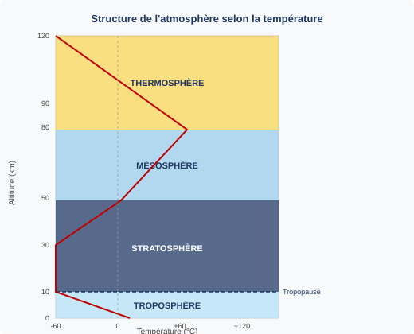
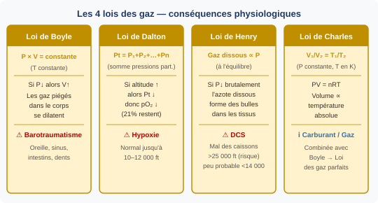
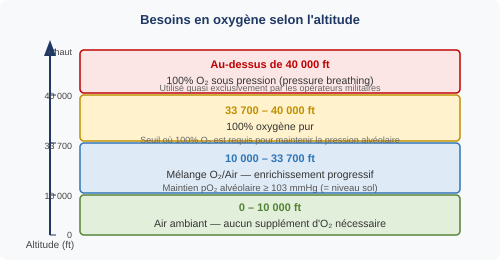
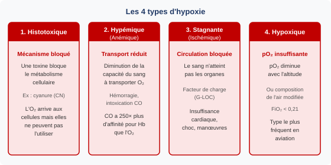
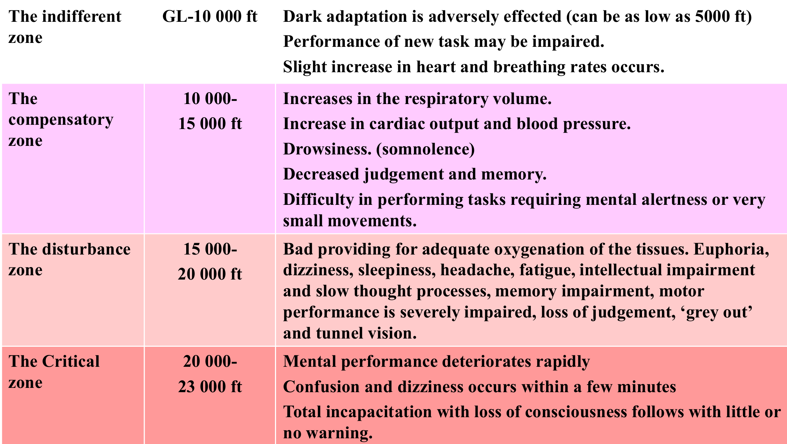
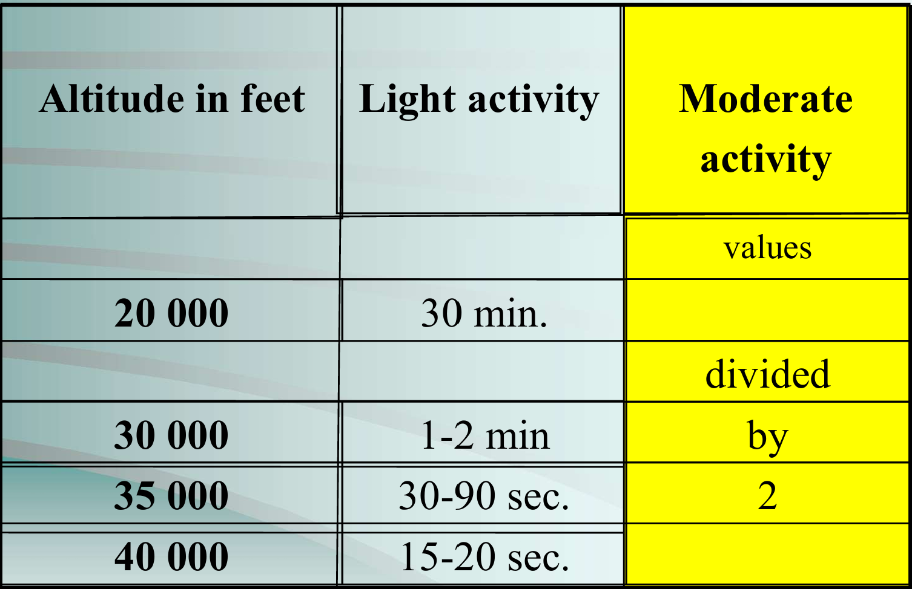

1. Structure et composition de l'atmosphère
1.1 Composition chimique — Homosphère
L'atmosphère peut être divisée en deux grandes couches selon sa composition chimique :
- L'homosphère (0 à 120 km) : composition gazeuse fixe et uniforme. C'est là que nous volons.
- L'hétérosphère (au-dessus de 120 km) : la composition chimique varie avec l'altitude.
1.2 Couches atmosphériques par température
La classification la plus utilisée en aviation découpe l'atmosphère selon le profil de température :

| Couche | Altitude | Gradient thermique | Notes |
|---|---|---|---|
| Troposphère | 0 – 11 km (≈ 36 090 ft) | −2 °C / 1 000 ft | Météo, aviation civile, nuages |
| Tropopause | ≈ 11 km | −56,5 °C (isotherme) | Limite supérieure de la troposphère |
| Stratosphère | 11 – 50 km | Remonte jusqu'à 0 °C à 50 km | Vols supersoniques, ozonosophère |
| Mésosphère | 50 – 80 km | Descend jusqu'à −90 °C | — |
| Thermosphère | 80 – 120+ km | Remonte fortement (+200 à +600 °C) | Satellites basse orbite |
1.3 Classification électrique
En termes de propriétés électriques, l'atmosphère se divise en deux :
- Neutrosphère (0 à ~90 km) : particules neutres dominantes — correspond à l'espace de vol habituel.
- Ionosphère (au-dessus de ~90 km) : particules chargées ionisées par le rayonnement solaire. Permet la propagation des ondes radio longues distances (HF) par réflexion.
1.4 La couche d'ozone (Ozonosphère)
L'ozone (O₃) résulte de l'action des rayonnements ultraviolets sur les molécules d'oxygène. L'ozonosphère se situe entre 20 et 70 km d'altitude, avec une concentration maximale autour de 30 km.
2. Atmosphère Standard OACI (ISA)
L'Atmosphère Standard Internationale (ISA) est un modèle de référence défini par l'OACI permettant de standardiser les calculs de performances, d'altimétrie et de certification des aéronefs.
2.1 Pression selon l'altitude — les fractions clés
La pression atmosphérique décroît de façon non linéaire (exponentielle) avec l'altitude. Trois altitudes-repères à mémoriser absolument pour l'ATPL :
3. Les lois des gaz et leurs conséquences physiologiques

3.1 Loi de Boyle-Mariotte → Barotraumatismes
Avec P₁ = pression initiale, P₂ = pression finale, V₁ = volume initial, V₂ = volume final
En aviation, lorsque l'avion monte, la pression ambiante chute. Les gaz piégés dans les cavités corporelles (oreille moyenne, sinus, intestins, dents cariées) se dilatent, causant des douleurs voire des lésions : ce sont les barotraumatismes. À la descente, c'est l'inverse : les gaz se compriment, mais si la cavité ne s'équilibre pas, une pression négative apparaît (blocage en descente = otalgie).
3.2 Loi de Dalton → Hypoxie d'altitude
Avec Pt = pression totale du mélange, P₁…Pn = pression partielle de chaque gaz constituant
Au sol, la pression partielle de l'oxygène est de 160 mmHg (21 % × 760 mmHg). En altitude, la pression totale diminue, mais la proportion d'O₂ reste à 21 %. Donc la pression partielle d'O₂ (pO₂) diminue avec l'altitude. C'est la cause principale de l'hypoxie en aviation.
| Constituant | Air atmosphérique (MSL) | Air alvéolaire (MSL) | Air alvéolaire (10 000 ft) |
|---|---|---|---|
| Oxygène O₂ | 160 mmHg (21 %) | 103 mmHg (14 %) | 55 mmHg ← minimum ! |
| Azote N₂ | 600 mmHg | 570 mmHg | 381 mmHg |
| Vapeur d'eau | — | 47 mmHg | 47 mmHg |
| CO₂ | — | 40 mmHg (5,3 %) | 40 mmHg (5,3 %) |
3.3 Loi de Henry → Maladie de décompression (DCS)
Le corps humain est normalement saturé en azote dissous. Lors d'une montée rapide (ou d'une décompression explosive), la pression ambiante chute brutalement. L'azote ne peut plus rester dissous et forme des bulles dans les tissus et le sang, causant la maladie de décompression (DCS).
3.4 Loi de Charles → Gaz parfaits
Rappel : T(K) = T(°C) + 273,15 — La loi des gaz parfaits combine Boyle et Charles.
4. Rayonnement cosmique
4.1 Rayons cosmiques galactiques
Les rayons cosmiques galactiques (GCR) sont composés principalement de protons (87 %), de particules alpha/hélium (12 %) et de noyaux lourds (1 %). L'unité de mesure de la dose d'irradiation en radioprotection est le Sievert (Sv).
La quantité totale de rayonnement reçue par un équipage dépend de :
- La durée du vol
- La latitude : le champ magnétique terrestre et l'absorption stratosphérique protègent davantage les régions équatoriales. La protection est minimale aux pôles.
- L'altitude (plus on monte, plus l'exposition augmente)
- Le coefficient d'absorption de la structure de l'aéronef
4.2 Rayonnement solaire
Le rayonnement solaire comprend les ondes électromagnétiques (ondes radio, rayons X, rayons gamma). Il est fonction des éruptions solaires, avec un cycle d'environ 11 ans et des éruptions de haute intensité tous les 3 ans environ.
- 1 mSv = environ 200 heures à FL350 sur Paris–New York, ou 400 heures à FL350 à l'équateur
- Surveillance obligatoire au-dessus de 6 mSv/an
- Évaluation de dose recommandée au-dessus de 1 mSv/an
- Limite maximale pour une femme enceinte : 1 mSv sur toute la grossesse
5. Transport de l'oxygène dans l'organisme
L'oxygène inspiré diffuse des alvéoles pulmonaires vers le sang. Dans le sang, il est transporté principalement lié à l'hémoglobine (Hb) des globules rouges (97–98 %), et accessoirement dissous dans le plasma (2–3 %). L'hémoglobine est la protéine-clé : chaque molécule peut fixer 4 molécules d'O₂ pour former l'oxyhémoglobine (HbO₂).
5.1 Saturation de l'hémoglobine selon l'altitude
La saturation en O₂ de l'hémoglobine (SpO₂) dépend directement de la pression partielle en O₂ (pO₂). La relation est non linéaire (courbe en S de dissociation Hb-O₂) :
5.2 Besoins en oxygène selon l'altitude
L'objectif est de maintenir une pO₂ alvéolaire ≥ 103 mmHg (équivalente au niveau de la mer) :

6. L'Hypoxie
L'hypoxie est un état d'oxygénation insuffisante des tissus. Elle est particulièrement dangereuse en aviation car son installation est insidieuse et le pilote affecté n'en est généralement pas conscient.
6.1 Les 4 types d'hypoxie

6.2 Stades d'hypoxie selon la durée d'exposition
| Type | Durée | Altitude typique | Manifestation principale |
|---|---|---|---|
| Chronique | Jours / mois / années | Vie en montagne | Adaptation physiologique (polyglobulie…) |
| Prolongée | Plusieurs heures | 2 500 – 3 500 m | Fatigue progressive |
| Aiguë | Quelques minutes | 4 000 – 6 000 m | Effets psychologiques, euphorie |
| Soudaine (décompression explosive) | Quelques secondes | Très haute altitude | Perte de connaissance sans symptôme préalable |
6.3 Zones/Stades d'hypoxie par altitude
Le tableau ci-dessous (à photographier depuis la diapositive 32 du cours) résume les 4 zones cliniques :

- Zone indifférente (0–10 000 ft) : léger impact vision nocturne, augmentation légère FC et FR
- Zone compensatoire (10 000–15 000 ft) : somnolence, ↑ débit cardiaque et respiratoire, jugement altéré
- Zone perturbatoire (15 000–20 000 ft) : euphorie, étourdissements, troubles sévères moteurs et cognitifs
- Zone critique (20 000–23 000 ft) : dégradation mentale rapide, perte de conscience en quelques minutes sans avertissement
6.4 Symptômes de l'hypoxie hypoxique
Les symptômes progressent de manière insidieuse, ce qui rend l'hypoxie particulièrement dangereuse — la victime ne se rend souvent pas compte de son état :
- Changement de personnalité : euphorie ou agressivité, désinhibition, faux sentiment de bien-être
- Altération du jugement : perte d'autocritique, non-conscience des performances dégradées
- Céphalées : surtout en hypoxie modérée prolongée
- Fourmillements dans les mains et les pieds
- Hyperventilation : fréquence respiratoire augmentée (réflexe compensatoire)
- Altération motrice : mouvements fins difficiles, écriture illisible, spasmes dans les stades avancés
- Amnésie à court terme : difficultés à réaliser les procédures (commence ~12 000 ft)
- Troubles visuels : réduction de la perception des couleurs, perte de vision périphérique, tunnel visuel
- Cyanose : teinte bleutée des lèvres et des ongles (Hb désoxygénée)
- Formication : sensation de fourmis sur la peau
- Inconscience puis décès si non traité
7. Temps de Conscience Utile (TUC) et Temps de Performance Efficace (EPT)
7.1 Définition du TUC
Le Temps de Conscience Utile (TUC) est la durée pendant laquelle le cerveau, en état d'hypoxie aiguë, peut encore initier des actions correctrices efficaces. Au-delà du TUC, le pilote est incapable d'agir correctement même s'il est encore conscient.
Le Temps de Performance Efficace (EPT) est encore plus court que le TUC : EPT < TUC. C'est le temps pendant lequel les performances sont réellement efficaces.
7.2 Valeurs du TUC selon l'altitude

7.3 Facteurs influençant le TUC
Le TUC varie selon :
- La condition physique individuelle
- La charge de travail (workload)
- Le tabagisme (réduit la capacité de transport O₂)
- Le surpoids / obésité
- La nature de la décompression : progressive ou explosive
8. Facteurs déterminant la gravité de l'hypoxie hypoxique
La sévérité de l'hypoxie et la susceptibilité individuelle sont modulées par les facteurs suivants :
- L'altitude : plus elle est élevée, plus l'hypoxie est sévère
- La durée d'exposition
- L'exercice physique / charge de travail : augmente les besoins en O₂
- Les températures extrêmes : sollicitent le système circulatoire et diminuent la tolérance à l'hypoxie
- La maladie et la fatigue
- L'alcool et les médicaments